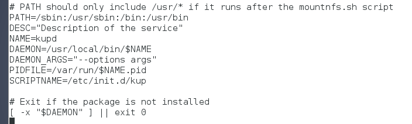
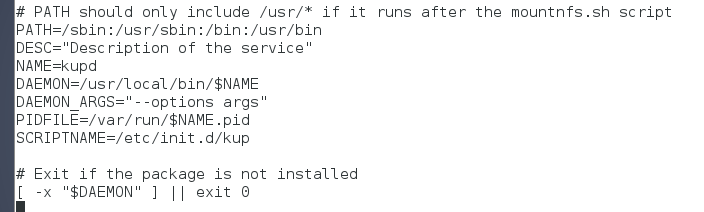

- Módulo: Administraci√≥n de Sistemas Operativos
- Título del trabajo
- Componentes del grupo: Alejandro Garcia Yumar
- Curso Académico: 2013/2014
- Fecha de entrega: 21 de Noviembre de 2014
El ejercicio consiste en configurar un servicio y que se inicie automaticamente
Para empezar creamos el script demonio.

Le damos permisos de ejecución

Comprobamos que funciona.

Creamos un script de control para arrancar y dentener automaticamente el demonio.
 

Le damos permisos de ejecución a este tambien
Comprobación del servicio

Y finalmente creamos otro scrip para la ejecutarlo al estilo upstart.